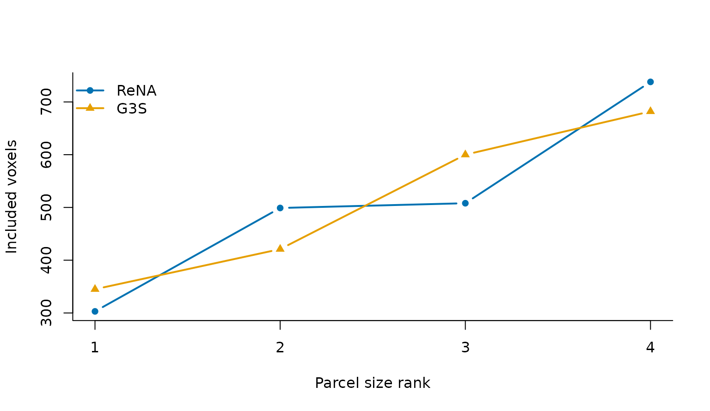

Which question are you asking?
Three questions are easy to conflate:
-
Is the object internally consistent? Check it with
validate_cluster4d(). -
What properties does one partition have? Measure
them with
cluster_metrics(). -
How do partitions differ on the same voxels? Use
compare_cluster4d().
A structurally valid result can still be scientifically poor, and two partitions can agree closely while both miss the relevant organization. Keep the three questions separate in an analysis report.
syn <- generate_synthetic_volume(
scenario = "gaussian_blobs", dims = c(16, 16, 8),
n_clusters = 4, n_time = 40, noise_sd = 0.08, seed = 42
)
rena_fit <- cluster4d(
syn$vec, syn$mask, 4, method = "rena",
connectivity = 26, parallel = FALSE
)
g3s_fit <- cluster4d(
syn$vec, syn$mask, 4, method = "g3s",
connectivity = 26, parallel = FALSE
)Is the result internally consistent?
Supply the original vector and mask for the strongest check. The validator then recomputes feature centers, physical coordinate centers, voxel ordering, and geometry rather than trusting stored summaries.
validation <- validate_cluster4d(rena_fit, syn$vec, syn$mask)
validation[c("valid", "warnings", "errors")]
#> $valid
#> [1] TRUE
#>
#> $warnings
#> character(0)
#>
#> $errors
#> character(0)valid = TRUE means the object satisfies its declared
contract. It does not certify anatomical meaning, reproducibility across
subjects, or suitability for a downstream model.
What does one partition measure?
cluster_metrics() exposes explicit voxel-level
estimands. With known labels it reports adjusted Rand index, variation
of information in bits, and pairwise Dice. With a canonical
cluster4d_result, spatial dispersion is reconstructed in
physical millimetres from its provenance.
rena_metrics <- cluster_metrics(rena_fit, truth = syn$truth)
rena_metrics[c(
"n_clusters", "size_summary", "ari_truth",
"variation_of_information_truth_bits", "spatial_rms_distance_mm"
)]
#> $n_clusters
#> [1] 4
#>
#> $size_summary
#> min median max
#> 303.0 503.5 738.0
#>
#> $ari_truth
#> [1] 1
#>
#> $variation_of_information_truth_bits
#> [1] 0
#>
#> $spatial_rms_distance_mm
#> [1] 15.79605Ground truth is available here because this is a simulation. Do not substitute an anatomical atlas and silently call it truth; describe the atlas comparison as agreement with a reference partition.
How do you compare two outputs?
Temporal coherence requires the original voxel-by-time matrix. Pairwise partition agreement requires exactly two results. The function refuses incompatible masks or physical geometry instead of silently comparing misaligned labels.
comparison <- compare_cluster4d(
ReNA = rena_fit, G3S = g3s_fit,
metrics = c(
"summary", "spatial_dispersion", "temporal_coherence",
"partition_agreement"
),
feature_mat = feature_mat
)
comparison
#> Method N_Clusters Min_Size Max_Size Mean_Size SD_Size Spatial_RMS_Distance_mm
#> 1 ReNA 4 303 738 512 177.8970 15.79605
#> 2 G3S 4 345 682 512 155.7926 14.04236
#> Temporal_Pairwise_Correlation Adjusted_Rand_Index Variation_of_Information_bits
#> 1 0.9076958 0.6237374 1.089296
#> 2 0.6714732 0.6237374 1.089296
#> Pairwise_Dice
#> 1 0.7251837
#> 2 0.7251837The agreement columns repeat because they describe the one ReNA–G3S pair. Adjusted Rand index corrects for chance agreement; variation of information is an information distance in bits; pairwise Dice compares whether voxel pairs are placed together. None is a substitute for spatial or temporal diagnostics.

Sorted parcel sizes reveal balance without implying that equal sizes are inherently better. Both valid outputs contain four parcels over the same 2,048 voxels.
What belongs in a report?
Record the mask and geometry, method and complete parameter set, requested and actual K, validity outcome, parcel-size distribution, and each estimand with its units. For simulation or external-reference studies, name the reference and state whether it is genuine ground truth.
Next, Visualize and export shows how to inspect the spatial result and round-trip it through NIfTI.